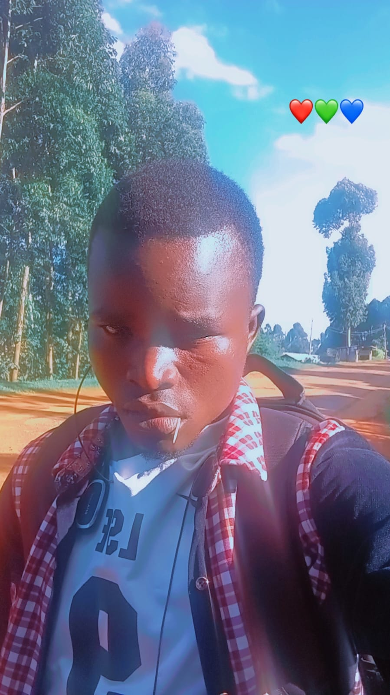

Wonderful people, welcome to my home page!
Hello! My name is Samuel Wesonga. I am a determined, curious and hardworking learner who loves turning ideas into real, working technology.
I am pursuing Information Technology. The course gives me a strong foundation in web development, programming, databases, networking and systems design.
With these skills, I can build websites and applications, set up and manage networks, organise and secure data, and help individuals and businesses solve problems using technology.
My passion for technology began with simple curiosity: wondering how phones, websites and computers actually work. That curiosity grew into a habit of practising every day, writing code, fixing errors and learning from every mistake.
Along the way I have learned patience, teamwork and problem solving, qualities that help me approach every project with confidence. I believe that every great developer starts as a beginner who refuses to give up.
My big dream is to create my own company: a technology company that designs websites, builds software and offers IT solutions to small businesses and communities.
I want to create jobs for other young people, make technology affordable and accessible, and prove that with skills, discipline and hard work, anyone can build something great.
NOTE: TO SEE MY CV, TAP "VIEW MORE"
View more CV profile